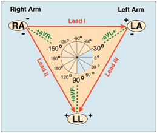
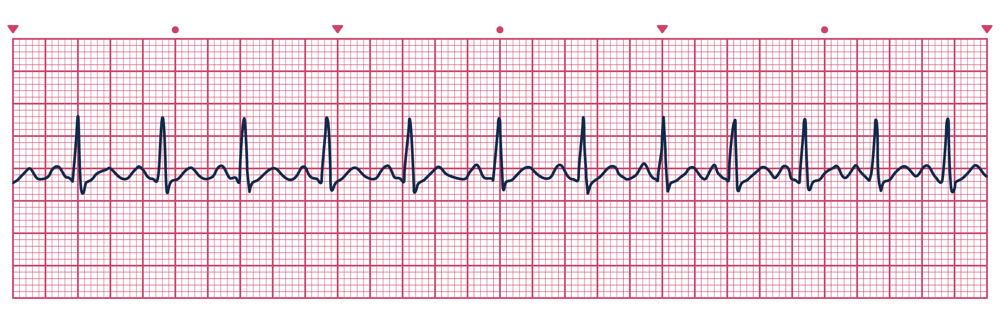
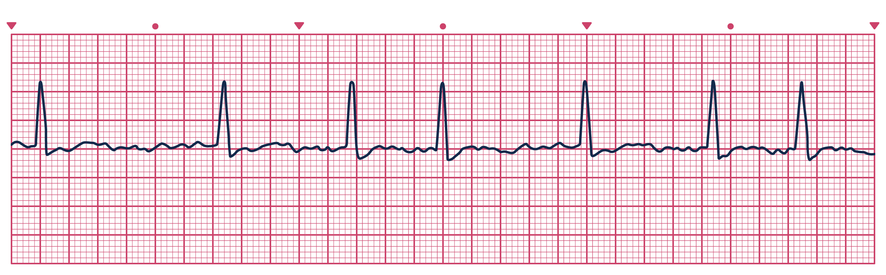
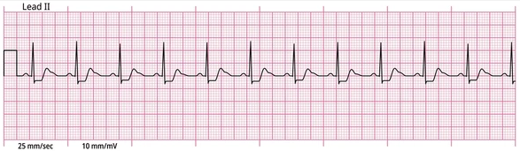

Pre-Lab Activity
Watch the ECG content in your Canvas modules to learn important foundational knowledge about the activities in this week’s lab class.
If you have not done so yet, complete the Canvas quiz relating to pulmonary conditions from the Week 2 modules.
Lab Session
Introduction
12-lead electrocardiograms (ECG or EKG – German spelling is Electrokardiogram) are commonly used in clinical settings to screen for cardiac abnormalities, particularly electrical conduction defects, in both resting and exercise states. In today’s lab, you will learn the principles of using a 12-lead ECG at rest and during exercise.
The objectives of this lab are to:
Demonstrate an ability to obtain a 12-lead ECG recording at rest
Demonstrate an ability to obtain a 12-lead ECG recording during exercise
Understand the various components of the waveform of an electrocardiogram at rest and during exercise
Discuss the accuracy and limitations of instrumentation in the interpretation of test results
While this lab provides a valuable introduction to the use and interpretation of ECG, it does not qualify you in any way to use ECG for clinical practice or to provide clinical cardiology advice.
Cardiac Conduction
A 12-lead ECG is the gold standard of cardiovascular assessment. A typical trace, with key segments and intervals labelled, is shown below. Each wave, including its magnitude, frequency, and shape can provide valuable diagnostic and prognostic information for cardiologists and qualified clinicians about an individual’s cardiac health.

A typical resting ECG shows electrical cardiac events, which allow us to determine many different structural and contractile problems that might exist by comparison to a ‘normal’ profile. However, the mechanics of these assessments are quite intensive and require detailed reading to fully understand.
In the example of a normal adult ECG below, the top 3 rows display the 12 leads outputs (I, II, III, aVR, aVL, aVF, and V1-V6), while the lowest row(s) display an extended output for a selected channel - in this case, Lead I. The horizontal gridlines indicate the magnitude of electrical signal (10 mm/mV). The vertical gridlines indicate time, where each major grid is 0.2 seconds (i.e., 1 second = 5 grids).

Placement of Electrodes
When referring to ‘leads’ in an ECG reading, we are not referring to the cables attached to the patient, but to a combination of electrodes that form imaginary lines in the body along which the electrical signals, or the differences in electrical potential, are measured. In fact, when we set up a 12-lead ECG, we actually only require 10 electrodes and cables.
The first 6 leads (precordial; V1-V6) are unipolar and are measured directly from the 6 electrodes placed immediately around the heart at standardised positions on the chest. The remaining 4 electrodes provide bipolar (I, II, III) or augmented unipolar (aVF, aVL, aVR) limb leads. The positioning of the limb electrodes (RA, RL, LA, LL) depends on the nature of the test. For a resting ECG, these electrodes are placed on the frontal surface of each wrist and ankle. For an exercise ECG, each electrode is relocated proximally, with arm electrodes placed on the frontal aspect of each shoulder, inferior to the acromioclavicular joint, and leg electrodes placed on the oblique musculature, anterior and superior to the iliac crest.

In the ECG chart above, you will notice that the QRS complex is not always positive in the leads. Each lead reads (differences in) electrical activity in a specific axis and direction between two or more electrodes, which results in negative voltages in some leads reflecting the orientation of the electrical gradient being measured. Einthoven’s triangle describes the positive-negative electrical relationship (polarity) of the leads and how they produce their respective lead views.


| Lead | Type | Plane | Location | View of Heart |
|---|---|---|---|---|
| I | Bipolar | Frontal (Lateral) | Reads from Right Arm to Left Arm | Lateral wall of left ventricle |
| II | Bipolar | Frontal (Inferior) | Reads from Right Arm to Left Leg | Inferior wall of left ventricle |
| III | Bipolar | Frontal (Inferior) | Reads from Left arm to Left Leg | Inferior wall of left ventricle |
| aVF | Augmented Unipolar | Frontal (Inferior) | Reads from heart centre to Left Leg | Inferior wall of left ventricle |
| aVL | Augmented Unipolar | Frontal (Lateral) | Reads from heart centre to Left Arm | Lateral wall of left ventricle |
| aVR | Augmented Unipolar | Frontal (Lateral) | Reads from heart centre to Right Arm | Basal aspect of septum |
| V1 | Unipolar | Horizontal (Septal) | Fourth intercostal space, right of sternum | Ventricular septum (interventricular) |
| V2 | Unipolar | Horizontal (Septal) | Fourth intercostal space, left of sternum | Ventricular septum (interventricular) |
| V3 | Unipolar | Horizontal (Anterior) | Midway between V2 and V4 | Anterior wall of left ventricle |
| V4 | Unipolar | Horizontal (Anterior) | 5th intercostal space on midclavicular line | Anterior wall of left ventricle |
| V5 | Unipolar | Horizontal (Lateral) | 5th intercostal space midway between V4 and V6 (anterior axillary line) | Lateral wall of left ventricle |
| V6 | Unipolar | Horizontal (Lateral) | 5th intercostal space on midaxillary line | Lateral wall of left ventricle |
The quality of ECG signals depends greatly on electrode placement on the patient. Body hair must be removed at each site to ensure good contact between skin and electrodes.
The Electrical Activity of a Sinus Rhythm
In order to conduct a 12-lead ECG it is important to understand the cardiac events that you are monitoring. Importantly, sections of the heart undergo depolarisation and repolarisation across the heart’s contraction cycle. Depolarisation is the process by which a resting cell becomes more positive and contracts, as an impulse from the sinus node is propagated. During this time, a muscle cell may go from its resting charge of -90 mV to a positive charge that may briefly reach +30 mV.
Repolarisation is the process where a cell is returned to its resting electrical state. Repolarisation begins immediately after depolarisation, and after a plateau at 0 mV, the cell quickly returns to a charge of -90 mV. The plateau at 0mV allows a refractory period in which the cell cannot be depolarised again. Similar to muscle cells, both depolarisation and repolarisation are controlled by the sodium-potassium ATP pumps located within the cardiac tissue. An ECG measures these voltage changes at different locations and from different aspects of the heart.
The sinus rhythm displayed on an ECG trace replicates the depolarisation-repolarisation activity at different locations of the heart. Research has given an insight to the cardiac electrical events which are represented by different components of a sinus rhythm. The electrical events of the heart and the ECG components as represented by Lead I are shown in Figure 1B below.

The first half of the P wave represents the SA node activation of the right atrium, and the signal reaching the AV node.
As the P wave is completed, both the left atrium and AV node have been activated. The peak of the P wave represents the activation of the AV node. P wave distortion may represent an abnormality in the morphology of either atrium. The P-R segment represents the electrical current reaching the Bundle of His and Purkinje fibres.
The first ventricle activation occurs in the intraventricular septum from left to right (hence the negative Q amplitude). AV conduction is measured throughout the PQ Interval (beginning of P wave to Q).
The activation of the two ventricles is represented as a tall positive spike (QRS complex). Note that despite the current flowing in both positive and negative directions the stronger current is flowing in a positive manner due to the larger thickness of the left ventricular wall. The polarity of the QRS complex may change depending upon which lead is being viewed. In leads I, II, and V3 to V6, the QRS complex is positive to neutral, whereas it may be positive, negative, or neutral in aVL or aVF. The aVR lead shows a negative QRS complex due to its orientation.
The repolarisation of the ventricles is represented within the ST segment and T wave. The point at which the QRS complex is complete and the ST segment begins is deemed the J point. Depression of the ST segment may be interpreted as problems in the depolarisation-repolarisation cycle within the ventricles. The T wave is the result of the rapid repolarisation of the ventricles. The T wave may be represented as positive in leads I, II and V2-V6. It also appears positive in aVL and aVF, but may be inverted if the previous QRS complex is less than 6 mm tall. The aVR lead shows an inverted T wave, whereas leads III and V1 show a varied polarity of the T wave. Whilst T wave changes may be the most sensitive measure of MI, it is also considered the least specific.
R-R Interval, Heart Rate, and Heart Rate Variability
The R-R Interval - the time between two successive R-waves in the QRS complex - can be used to easily calculate the heart rate using the vertical grid lines shown on a typical ECG chart. By dividing 300 by the number of major (thick) grid lines that appear during each R-R Interval, we can quickly calculate instantaneous heart rate. The minor (thin) grid lines occur at increments of 0.2, so these can be included in the calculation if required. Alternatively, count the number of R-waves that occur in the ECG rhythm strip and multiply by 6 to give the average beats per minute.
Your heart rate, even at rest, is not a perfectly constant rhytm. It fluctuates by fractions of a second with each beat in response to autonomic factors such as electrical impulse and breathing. This phenomenon is referred to as Heart Rate Variability (HRV), and is a completely normal and natural occurrence. HRV has been demonstrated to provide diagnostic value, for instance sinus arrythmia where HRV exceeds 0.12 seconds. HRV can be used to identify changes in sympathetic and parasympathetic nervous system activity that may indicate increased physiological or psychological stress, which may make it suitable for identifying your body’s responsiveness and resilience to stress at a point in time. Typically, higher HRV indicates higher adaptability, while lower HRV is observed with higher heart rates, which may be an indication of high stress or health problems.
Methods
Equipment
- Metabolic Cart (MedGraphics CardiO2)
- 12-Lead Electrocardiogram Module (Mortara)
- Ergometer (treadmill or bike)
- Electrodes
- Gloves
- Razors
- Alcohol swabs
- Fine sandpaper
- Adhesive tape
Procedure
Using the MedGraphics CardiO2 ECG Module
In today’s practical you will be using the MedGraphics CardiO2 ECG Module to perform a resting ECG. This is a clinical system which is used to perform diagnostic 12-lead ECG testing. The unit can record ECG results and search for trends and abnormalities in the data. In this manner, either electronic or manual identification of abnormalities is possible. Despite having sophisticated software to detect problems, manual checking to ensure accuracy of interpretation is recommended.
Electrodes are placed as follows:
Select electrode sites over soft tissues or close to bone, using the Lab Manual or CardiO2 software for reference
Prepare the electrode site by rubbing gently with fine sandpaper, then wipe with alcohol swabs to clean the site of any skin fragments, sweat, or oil; *If the patient has body hair at any electrode site, you must first remove the hair in the area using a shaver before following with sandpaper and alcohol swabs
Once the alcohol has dried, remove the adhesive cover from an electrode then apply the electrode firmly to the skin at each site, trying not to overlap the adhesive gel surfaces of the electrodes
Referring to the Lab Manual or CardiO2 software, gently press each clip-on ECG cable onto its respective electrode, making sure to check that each clip is applied at the correct location and has been clipped on securely
Secure each wire to the body using a small amount of tape in a position out of the way of moving limbs and place the ECG module in its holster or away from the client
You may be making physical contact with patients/peers’ bodies during this lab activity, so exercise professional conduct at all times - ask for consent before touching, and always explain what you are doing.
For female patients, electrodes must not be placed on top of the breast unless you cannot gain access to the normal electrode placement position. If you have to apply electrodes onto the breast, make a note on the recording. If you are required to shift the breast to correctly place the electrodes, use the back of your hand to do so.
Resting ECG Measurement
Once the patient details have been entered into the system and the electrodes have been correctly applied, a resting ECG can be recorded.
A resting ECG will identify any resting cardiac abnormalities, and may pick up morphological changes such as ventricular hypertrophy. The system requires a high quality signal to determine any problems, so proper skin preparation is vital.
The subject is to be seated comfortably or lying down. In today’s lab we will have the patient lying down. The patient needs to be instructed to remain still for the entirety of the measurement with no talking, as limb or chest movement may result in movement artefact on the ECG trace. Ask the patient to cough and note what happens to the ECG trace.
Perform a resting ECG on 3 students, and then analyse the printout in detail. You can refer to the sample traces of various conditions in the appendix for comparison.
Exercise ECG Measurement
To identify any cardiac abnormalities during increased work intensity, it is important to place the heart under cardiac stress. If any abnormalities exist, it is likely that they will become evident during maximal testing. However, maximal stress testing or a graded exercise test (GXT) should only be performed after extensive health screening, and a diagnostic need for the maximal test has been established.
Exercise ECG testing requires similar electrode placement as the resting ECG, with the exception that limb leads are always truncated for the duration of the test. Rather than sometimes being placed on the ankles and wrists (as evident in some resting protocols), the upper limb leads are placed immediately inferior to the distal 2/3 segment of the clavicle (avoiding the muscle mass) and the lower limb leads are placed on the oblique musculature, immediately superior to the anterior superior iliac spines.
Constant monitoring of the ECG from the GXT should be performed for three reasons:
To ensure safety of the performer during GXT and training
To measure accurate heart rates
To diagnose cardiovascular disease
The first two objectives can be fulfilled by trained non-medical personnel, whereas the last is the responsibility of the supervising physician. Thus performing GXT is often a combination of exercise and medically trained professionals. However, both should be aware of the dangers of GXT and indications that the test should be terminated.
When considering the formulation of an appropriate protocol for a test you will need to consider the activity level of the participant, the test duration, the rate of progression, and other factors. Some relevant information about ramping/non-ramping protocols, exercise modality, claudication pain, and specific examples of protocols are presented on page 67-69 of your textbook. Some example protocols are also included in the appendix for this lab class.
In today’s lab you will have one participant perform 2 x 3-minute stages of work on a bicycle ergometer, then 2 x 3-minute stages of work on a treadmill. This will showcase the typical fluctuations in ECG signal quality once exercise is introduced. The starting and subsequent-stage exercise intensities should be relevant to each participant’s level of fitness, but are not designed to be maximal (remember, the pre-screen tool only enables them to perform light-moderate intensity exercise if they are not already engaged in more than 150 minutes of exercise per week).
Record an example of the ECG trace for each stage and observe the difference from rest to exercise. This will form part of the discussion in class.
Analysis
- Raw Measurements - usually made in frontal plane leads
- Heart rate, PR interval, QRS duration, QT interval, QRS axis in frontal plane
- Rhythm Analysis
- State basic rhythm (e.g., “normal sinus rhythm”, “atrial fibrillation”); identify additional rhythm events if present
- Conduction Analysis
- “Normal” conduction implies normal sino-atrial (SA), atrio-ventricular (AV), and intraventricular (IV) conduction; if abnormalities present, consider SA Block, AV Block?
- Waveform Description
Carefully analyse the 12-lead ECG for abnormalities in each of the waveforms in the order in which they appear
P-waves: are they too wide, too tall, look strange (e.g., are they ectopic?)
QRS complexes: look for pathologic Q-waves, abnormal voltages
ST segments: look for abnormal ST elevation and/or depression
T-waves: look for abnormally inverted T-waves
The ACSM has guidelines defining criteria for a quick and convenient assessment to determine if an ECG test is abnormal, and are listed below. Exercise physiologists will typically examine for each of these issues as data comes to hand.
Exercise induced ST depression or elevation of ≥ 1 mm relative to the Q-Q line, lasting 0.06 sec from the J point
Ventricular tachycardia (≥ 3 consecutive premature ventricular contractions or >30% frequency)
Exercise induced left or right bundle branch block
Sustained supraventricular tachycardia
R-on-T premature ventricular contraction
Exercise induced second or third degree AV block
Post exercise U-wave inversion
Inappropriate bradycardia
Common Diagnoses
ST segment depression - cardiac ischaemia
Prolonged Q-T Interval - repolarisation abnormality and ventricular arrhythmias
Prolonged QRS Complex - abnormal conduction velocity, bundle branch block
After the lab class you are encouraged to examine the wealth of information available online and in textbooks to improve your understanding of the ECG profile. Naturally, it takes time to become an expert in ECG interpretation, however, exercise physiologists and clinicians are increasingly exposed to this information, so it is an important area of understanding.
Discussion
Were any cardiac irregularities noted in the 12-lead ECG rhythm strip from the patient you tested at rest? If so, what were they and where are they likely to originate from?
Discuss any special considerations and limitations to ECG testing in:
Patients with hypertension
Females
Patients recovering from a myocardial infarction
Briefly describe how the 12 leads on an ECG are determined from only 10 electrodes.
List 3 procedures that can be undertaken to ensure a good quality ECG signal during exercise.
What is one main similarity and one main difference between the waveforms of the resting ECG output and the ECG output obtained during exercise? Use Lead I/Lead II and V4/V5 for this analysis
If you were required to test a sedentary 55 year old male with exertional dyspnea, borderline hypertension and a family history of heart disease, which treadmill protocol would be the most appropriate to select, and why?
References
American College of Sports Medicine (2021). Guidelines for Exercise Testing and Prescription, 11th edn, Lippincott, Williams & Wilkins, Philadelphia, USA.
Conover, M.B. (2002). Understanding electrocardiography, 8th ed. Mosby: Sydney.
Davis, D. (2004). Quick and accurate 12-lead ECG interpretation, 4th ed. Lippincott, Williams and Wilkins: Philadelphia.
Julian, D.G. & Cowan, J.C. (2005). Cardiology, 8th ed. Bailliere Tindall: London.
Coombes, J., Burton, N. & Beckman, E. (2021). ESSA’s Student Manual for Exercise Prescription, Delivery and Adherence, Elsevier, Sydney, Australia.
The Cardiac Society of Australia and New Zealand. (2003). Safety and performance guidelines for clinical exercise stress testing.
Appendix
Appendix 1 - Common Cardiac Abnormalities
There are many conditions which manifest in unusual electrical activity in the myocardium. Clinical exercise physiologists are trained to observe abnormalities in ECG profile, with subtle differences in the PQRST waveform reflecting important cardiac deficiencies. A few typical abnormalities are described below, with some containing a sample abbreviated profile of the ECG trace for such conditions. For further information on such conditions, consult the reference list at the end of this lab.
For each of the following example ECG charts, try to calculate the heart rate by dividing 300 by the number of major gridlines between each R-wave peak (the minor gridlines are in 0.2 increments). Alternatively, count the number of R-wave peaks in the entire ECG strip (6 seconds) and multiply by 10 for the average beats per minute.
A Normal Sinus Rhythm is shown here for comparison against the other conditions.

Sinus Arrhythmia: a normal ECG rhythm with a P wave, and between 50-100 bpm. The difference in RR interval duration between predominant beats is greater than 15%, and no premature atrial complexes are detected.

Sinus Bradycardia: a normal ECG rhythm with a P wave with a heart rate of less than 50 bpm.

Sinus Tachycardia: a normal ECG rhythm with a P wave with a heart rate of greater than 100 bpm.

Atrial Fibrillation: an abnormal ECG rhythm with no P wave, and a heart rate ≤100bpm. The difference in at least one RR intervals between the predominant beats is <15%.

ST Elevation: an abnormal ECG in which the ST elevation in leads V1-V6 is ≥1mV, and ST elevation in at least 2 of leads V1-V6.
ST Depression: an abnormal ECG in which the depression of the ST segment, and is best noted by 1mm depression for 0.06 sec in the lateral leads I, V4, V5, and V6. Exercise induced ST depression between 1-2mm reflect a moderate risk, however a greater risk is associated with >2mm depression. ST depression is indicative of myocardial ischemia and blockage of a major coronary artery. An example of ST depression is given below (note leads I, V4, V5 and V6).

Ectopic beats: In some circumstances, the heart can undergo electrical conduction that is stimulated from outside the SA node. These irregularities are called ectopic beats. Ectopic beats are recognised by the abstract shapes produced within the ECG rhythm as they do not follow the normal conduction system of the heart. There are two basic types of ectopic beats: premature and escape. Premature ectopic beats are caused by irritable areas of the heart (commonly the atrium, AV junction or ventricles) that discharge before the signal from the SA node has been received. They are recognised by new waveforms/complexes that come early in the cardiac cycle (before next scheduled beat arrives). Escape ectopic beats arise from the same areas as the premature beats, and are considered a safety feature to prevent the heart going into complete arrest. They are often the end-product of the SA node failing to fire in a rhythm. The escape beats differ to the premature beats in the sense that they arrive late in the cardiac cycle, or preceded by a long pause.

Appendix 2 - Common exercise protocols for cardiac stress testing
There are a number of different protocols used to perform cardiac stress testing, and the choice of which test may depend upon the nature of the patient visit, pre-existing orthopaedic or metabolic condition, or simply the technician’s personal choice.
Commonly, stress tests are performed on either a treadmill or cycle ergometer due to their popularity, convenience, and safety. Stress tests are typically incremental in nature to provide the ability to monitor cardiac activity during lower intensity workloads prior to introducing greater workloads.
Importantly, cardiac stress tests often maintain a low velocity, but rely on increases in either gradient or resistance to increase exercise intensity. These test modifications are necessary as the majority of patients requiring cardiac stress testing will be of low athletic ability and may risk either physical or cardiac injury by running at high speeds or cycling at a high cadence.
The introduction of performing stress tests through chemical stimulation as opposed to exercise methods may provide a safer manner of testing due to the lack of physical movement, however this is commonly reserved for patients who are at risk but are unable to perform substantial physical movement.
Listed below are a number of common protocols employed in cardiac stress testing for treadmill ergometers from chapter 5 of your textbook:
| Stage | Duration (min) | Speed (km·h-1) | Grade (%) |
|---|---|---|---|
| 1 | 3 | 2.7 | 0 |
| 2 | 3 | 2.7 | 5 |
| 3 | 3 | 2.7 | 10 |
| 4 | 3 | 4.0 | 12 |
| 5 | 3 | 5.4 | 14 |
| 6 | 3 | 6.7 | 16 |
| 7 | 3 | 8.0 | 18 |
| 8 | 3 | 8.8 | 20 |
| Stage | Duration (min) | Speed (km·h-1) | Grade (%) |
|---|---|---|---|
| 1 | 1 | 5.3 | 2 |
| 2 | 1 | 5.3 | 3 |
| 3 | 1 | 5.3 | 4 |
| 4 | 1 | 5.3 | 5 |
| 5 | 1 | 5.3 | 6 |
| 6 | 1 | 5.3 | 7 |
| 7 | 1 | 5.3 | 8 |
| 8 | 1 | 5.3 | 9 |
| 9 | 1 | 5.3 | 10 |
| Stage | Duration (min) | Speed (km·h-1) | Grade (%) |
|---|---|---|---|
| 1 | 2 | 1.6 | 0 |
| 2 | 2 | 3.2 | 0 |
| 3 | 2 | 3.2 | 3.5 |
| 4 | 2 | 3.2 | 7.0 |
| 5 | 2 | 3.2 | 10.5 |
| 6 | 2 | 3.2 | 14.0 |
| 7 | 2 | 3.2 | 17.5 |
| Stage | Duration (min) | Speed (km·h-1) | Grade (%) |
|---|---|---|---|
| 1 | 3 | 2.7 | 10 |
| 2 | 3 | 4.8 | 10 |
| 3 | 3 | 6.4 | 10 |
| 4 | 3 | 8.0 | 10 |
| 5 | 3 | 8.0 | 10 |
| 6 | 3 | 9.6 | 10 |
Keteyian, S. & Zuhl (2023), Graded Exercise Testing, in: Ehrman, J., K., Gordon, P. M., Visich, P. S. & Keteyian, S. J. Eds, Clinical Exercise Physiology 5th edn, Human Kinetics, Champaign IL., USA.